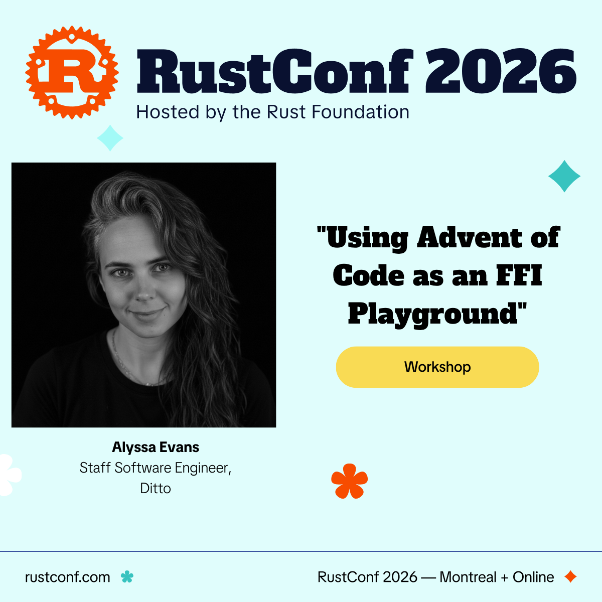

Alyssa Evans
https://github.com/alycda/RustConf2026
before
Six years in Free Ad-Supported Streaming TV — web apps for connected TVs and game consoles.
now
Staff Software Engineer, SDKs at Ditto. FFI is literally my day job.
In between, I became that engineer who kept pushing to adopt Rust.
and document the messy middle.
git clone https://github.com/alycda/RustConf2026.git
cd <repo>
./scripts/self-check.sh✅ green → browse days/README.md and pick your day
· ❌ red → the error names the fix; wave me over · you need
one optional track, not all four
An FFI signature is a treaty between two runtimes that disagree about memory, types, errors, and encoding — and neither side can enforce it.